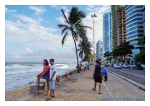

.jpg)
A Basílica e Convento de Nossa Senhora do Carmo
A Basílica e Convento de Nossa Senhora do Carmo é um conjunto arquitetônico católico pertencente à Ordem Carmelita, localizado na cidade do Recife, em Pernambuco, Brasil.
O imponente frontispício da Basílica do Carmo possui muitas volutas esculpidas em pedra, e a torre, de 50 metros de altura — a mais alta torre barroca do Brasil —, é encimada por um dos mais elaborados bulbos do estilo no país. No interior, a decoração em talha dourada e a estatuária são de valor inestimável, destacando-se a capela-mor e seu fabuloso retábulo com imagens de Nossa Senhora do Carmo e dos profetas Elias e Eliseu.
No seu pátio, a cabeça do líder quilombola Zumbi dos Palmares ficou exposta até completa decomposição. No convento, encontram-se enterrados os restos mortais de Frei Caneca.

Praia de Boa Viagem
A Praia de Boa Viagem é a praia urbana mais famosa da cidade do Recife, capital do estado brasileiro de Pernambuco. Com aproximadamente oito quilômetros (8 km) de extensão, está situada no bairro homônimo, Zona Sul da capital pernambucana, delimitada pela Praia do Pina ao norte e pela Praia de Piedade ao sul.
A maior parte da Praia de Boa Viagem é protegida por uma barreira de recifes naturais, que deu nome à cidade.
No século XVII, a povoação da Boa Viagem servia de ponto de descanso dos viajantes que por ali transitavam vindos do sul da Capitania de Pernambuco. A praia tornou-se depois um local de veraneio para os recifenses, até a chegada dos edifícios nas décadas de 1940 e 1950. Tais edifícios beira-mar criam sombras sobre a praia, o que levanta críticas. A orla dispõe de parque, jardim e espaços de prática desportiva.
Na maré baixa formam-se várias piscinas naturais rasas, com águas mornas e transparentes, ao longo da praia. Também durante a maré baixa é possível andar sobre os recifes, que são relativamente planos e largos (mas escorregadios). Quando a maré sobe, os arrecifes ficam completamente cobertos pela água. Na Praia de Boa Viagem há quiosques padronizados, ciclovia, pista de cooper, chuveiros, quadras de vôlei e tênis e equipamentos para musculação.